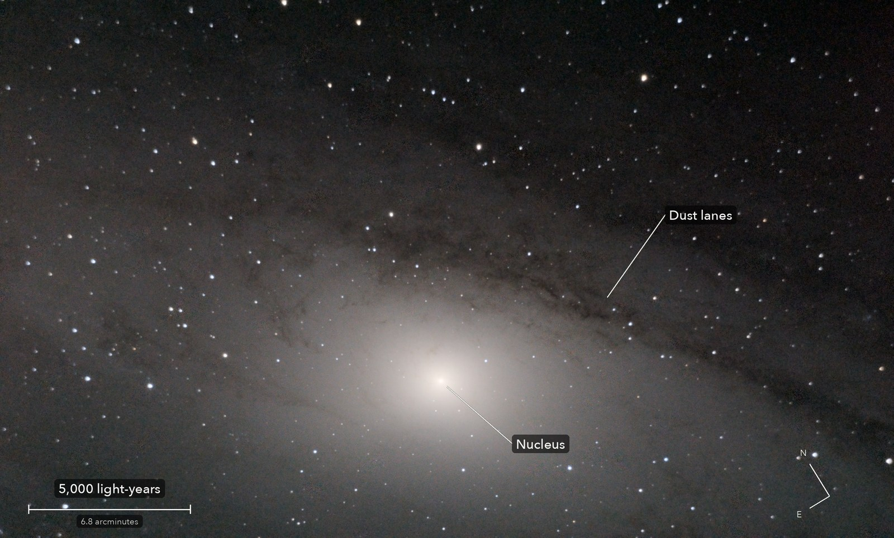

The heart of the Andromeda Galaxy
Messier 31
The centre of the nearest big galaxy to our own. The glow is billions of stars, too far away to see one by one. The dark lanes are dust in its spiral arms, where new stars form.
What you are looking at

Swipe sideways to see the rest. Tap the picture for full size.
- Distance
- 2.5 million light-years
- This picture spans
- 28,000 light-years
- The light left
- 2.5 million years ago, when our ancestors were first making stone tools
- For scale
- Each pixel is about 10 light-years across
For photographers
An hour on one field; cloud took two frames in three.
- Exposures
- 38 x 20 s at ISO 3200: 12.7 minutes
- Frames
- 109 taken, 38 kept (27 clear, 11 through thin cloud and down-weighted). 71 lost to cloud, judged by how much each frame dimmed the stars
- Sampling
- 0.776 arcsec per pixel: one pixel per 2 x 2 colour cell. Stars 4.1 arcsec wide
- Field
- 37.4 x 22.5 arcmin: the part of one sensor frame that at least 31 of the 38 frames cover, less 2.3 arcmin off the top, cropped to lose the shadow of a piece of chaff in the light path
- When
- 4 October 2026, after midnight, over 70 minutes. 83 degrees up, Moon just rising
- Field rotation
- The mount was far off the pole, so the field turned 2.9 degrees during the run. Corrected in registration
- Calibration
- Flat built from the clouded frames themselves: cloud glow seen through the optics, less the scaled clear frame. Dust shadows left out of the average. No darks
- Stacking
- RAW colour planes (no demosaic), hot pixels by 3 x 3 median, registered on stars with rotation, sigma-clipped mean, weighted by transparency. One constant per frame; no sky surface fitted, the galaxy fills the frame
- Finish
- Black 13 and white 229 of 255, gamma 1.2, S-curve 0.45. Saturation x 1.2. Dark parts made neutral and smoothed (bilateral, 2.5 px)
- Telescope
- Celestron 8SE Schmidt-Cassegrain with dew shield: 203 mm aperture, 2,084 mm focal length (measured by plate solve), f/10.3
- Camera
- Sony a6000, stock, at prime focus: APS-C 23.5 x 15.6 mm, 6000 x 4000, 3.9 micron pixels, RAW
- Mount
- Sky-Watcher EQ6-R, unguided. Set down 27 degrees off the pole; both axes driven from a pointing model fitted to plate solves. Residual drift about 0.1 arcsec per second
© 2026 Brad Gessler · Celestron 8SE (8 inch, 2,080 mm) and Sony a6000 on an EQ6-R · San Francisco Bay Area · 4 October 2026
Capture and mount: Observatory (Elixir on a Raspberry Pi 3). Stacking: numpy, OpenCV, rawpy. Plate solving: astrometry.net. Stacked from the camera's RAW frames. Nothing generated.
© 2026 Brad Gessler. The pictures and the words are his own; all rights reserved.